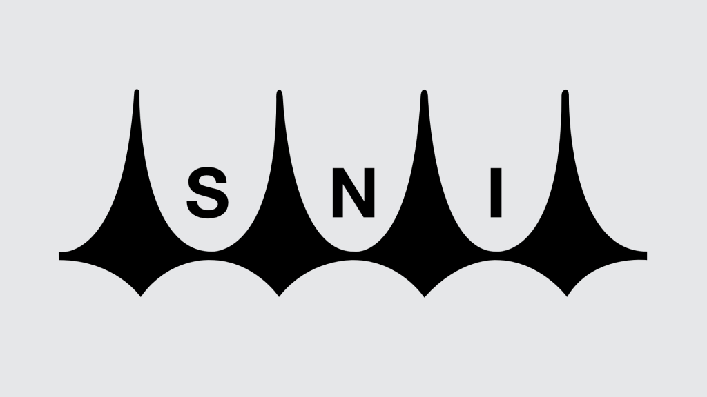

SNI
Foi criado em 1964, o Serviço Nacional de Inteligência foi criado para ser
um órgão de espionagem.
O que o SNI fazia:
- Espionava políticos e civis
- Monitorava quase todos os cidadãos Brasileiros.
- Coordenava repressão política
-
Denunciava a oposição para o exército, a polícia militar, e o DOI-CODI.
-
O SNI também tinha agentes infiltrados nas universidades, partidos
políticos, meios de comunicação, empresas e movimentos estudantis.
-
Foi o principal órgão da Ditadura Militar, ficando mais poderoso durante
o governo Médici.
